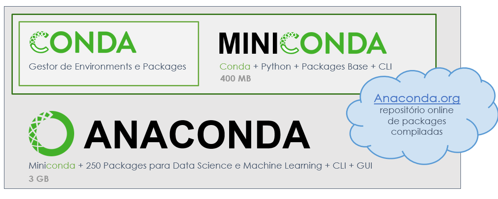
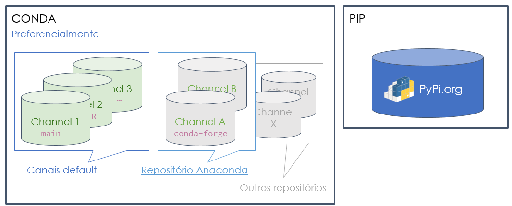
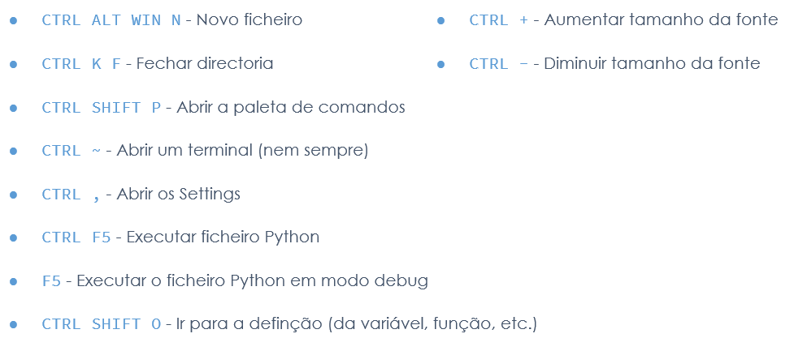
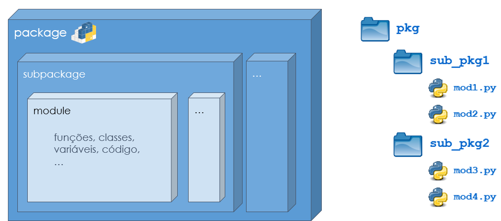
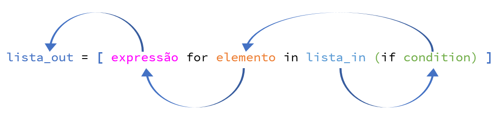
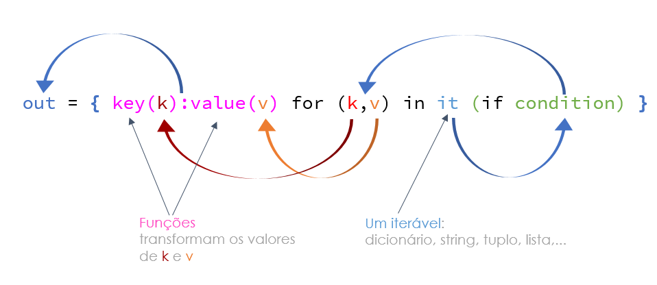

from modules import conversor
conversor.metros_em_milhas(100)0.06213727366498068Configuração do ambiente de desenvolvimento.
Motor para gestão de packages, dependencias e enviroments para qualquer linguagem.

abrir o terminal: Anaconda prompt
C:\users\bruno.lima>conda -V
C:\users\bruno.lima>conda info
C:\users\bruno.lima>conda update -n base -c defaults conda (atualiza conda no env base)
Espaços isolados e independentes que têm código e as dependências de um projecto.
Ferramentas de criação de ambientes virtuais:
venv, virtualenv, pipenv, conda, poetry
criar ambiente virtual ‘exercicio_env’:
> conda create --name exercicio_env
criar ambiente dentro duma subdirectoria:
(base) C:\Users\bruno.lima\Documents\Python\exercicio_proj>conda create --prefix ./envs
listar os ambientes existentes:
(base) C:\Users\bruno.lima\Documents\Python\exercicio_proj>conda env list
apagar o ambiente ‘exercicio_env’:
(base) C:\Users\bruno.lima\Documents\Python\exercicio_proj>conda remove -n exercicio_env --all
instalar o pip:
(base) C:\Users\bruno.lima\Documents\Python\exercicio_proj>conda install pip
exportar o ambiente activo para um ficheiro enviroment.ymal:
(base) C:\Users\bruno.lima\Documents>conda env export > enviroment.yml
exportar o ambiente activo sem as dependencias para um ficheiro from_history.yml:
(base) C:\Users\bruno.lima\Documents>conda env export --from-history > from_history.yml
criar um spec-file.txt com os detalhes do ambiente activo:
(base) C:\Users\bruno.lima\Documents>conda list --explicit > spec-file.txt
Quando iniciamos um novo projecto é recomendável iniciar um novo ambiente:
(base) C:\Users\bruno.lima\Documents\projecto_novo>conda create -p ./conda numpy
para sair de um ambiente:
(teste) C:\Users\bruno.lima\Documents\projecto_novo>conda deactivate

criar ambiente e activá-lo na nossa pasta de projecto:
(base) C:\Users\bruno.lima\Documents\Python\exercicio_proj>conda create --prefix ./envs
(base) C:\Users\bruno.lima\Documents\Python\exercicio_proj>conda activate ./envs
instalar package pip:
(C:\Users\bruno.lima\Documents\Python\exercicio_proj\envs) C:\Users\bruno.lima\Documents\Python\exercicio_proj>conda install pip
procurar versoes numpy entre 1.19 e 1.23:
(C:\Users\bruno.lima\Documents\Python\exercicio_proj\envs) C:\Users\bruno.lima\Documents\Python\exercicio_proj>conda search "numpy >=1.19, <=1.23"
instalar package python-twitter-v2:
(C:\Users\bruno.lima\Documents\Python\exercicio_proj\envs) C:\Users\bruno.lima\Documents\Python\exercicio_proj>pip install python-twitter-v2
pode usar-se a partir do ANACONDA
Com o miniconda temos de activar um ambiente primeiro e depois instalar:
conda install ipykernel conda install jupyter
Instalar extensões:
Em settings (Ctrl + ,), pesquisar CONDA e definir o path: C:\ProgramData\anaconda3\Scripts\connda.exe
pesquisar format e activar formatação automáticaao gravar
activar verificação de tipos typecheck -> escolher basic
podemos também defenir terminal integrated default como Command Prompt
settings -> themes -> color theme (Ctrl K Ctrl T)
mais atalhos:


from modules import conversor
conversor.metros_em_milhas(100)0.06213727366498068classes simples
class Gato:
"""Modelo de um gato"""
def mia(self):
print("Miau...")tom = Gato()
tom.mia()
tom.__doc__Miau...'Modelo de um gato'class Pessoa:
# método constutor
# executado sempre que se cria um obejcto do tipo Pessoa
def __init__(self, nome_da_pessoa):
self.nome = nome_da_pessoa # cada instância tem a seu atributo (property)esta_pessoa = Pessoa("Fernando")
esta_pessoa.nome'Fernando'apagar instancia
pessoa_errada = Pessoa("Errada")
print(pessoa_errada.nome)
print(pessoa_errada)
del pessoa_errada
#print(pessoa_errada.nome)
#print(pessoa_errada)Errada
<__main__.Pessoa object at 0x000001B770805430>atributos de classe
class Funcionario:
funcionarios_count =0
def __init__(self, numero_de_funcionario):
self.numero_de_funcionario = numero_de_funcionario
type(self).funcionarios_count += 1for num_func in range(1, 10):
Funcionario(num_func)
print(f"Foram criados {Funcionario.funcionarios_count} funcionários.")Foram criados 9 funcionários.class PessoaReal:
def __init__(self, nome_de_entrada):
self.nome = nome_de_entrada
@property
def nome(self):
return f"Sua alteza {self._nome_privado}"
@nome.setter
def nome(self, nome_de_entrada2):
if (len(nome_de_entrada2) == 0):
raise ValueError("O nome não pode ser vazio")
self._nome_privado = nome_de_entrada2uma_pessoa = PessoaReal("Artur")
print(uma_pessoa.nome)
uma_pessoa.nome = "Clara"
print(uma_pessoa.nome)Sua alteza Artur
Sua alteza ClaraDefine uma class carro com os atributos: - marca - deposito - nivel
e com os métodos: - andar (Km) - abastecer (litros)
class Carro:
def __init__(self, marca, deposito, nivel):
self.marca = marca
self.deposito = deposito
self.nivel = nivel
def andar(self, km):
self.nivel -= km * 7 / 100
if self.nivel < 0:
self.nivel = 0
print(f'Andou {km} km')
# recebe o numero de litros a abastecer; so pode abastecer ate ao maximo do deposito
def abastecer(self, litros):
self.nivel += litros
if self.nivel > self.deposito:
self.nivel = self.deposito
print(f'Abasteceu {self.nivel} litros')
def __str__(self):
return f'{self.marca} - {self.nivel:.2f}'carro1 = Carro('Fiat', 50, 20)
carro2 = Carro('Renault', 60, 30)
print(carro1)
carro1.abastecer(100)
carro1.andar(10)
carro1.nivelFiat - 20.00
Abasteceu 50 litros
Andou 10 km49.3definição de uma lista bidimensional
lista_bi = [[1, 2, 3], [4, 5, 6], [7, 8, 9]]
lista_bi[1][2]6dois loops percorrendo a lista bidimensional usando iteradores
for linha in lista_bi:
for coluna in linha:
print(coluna, end = '')123456789Adicionar ou remover
lista = [[1,2,3],[4,5,6]]
lista.append([7,8,9])
lista[[1, 2, 3], [4, 5, 6], [7, 8, 9]]del lista[1]
lista[[1, 2, 3], [7, 8, 9]]lista = [[1,2,3],[4,5,6]]
lista.extend([['a','b']])
lista[[1, 2, 3], [4, 5, 6], ['a', 'b']]lista[:2][[1, 2, 3], [4, 5, 6]]lista = [[1, 2, 3], [4, 5, 6], [7, 8, 9]]
del lista[1][2]
lista[[1, 2, 3], [4, 5], [7, 8, 9]]lista = [[1, 2, 3], [4, 5, 66,6,6], [7, 8, 9]]
lista[1].remove(6)
lista[[1, 2, 3], [4, 5, 66, 6], [7, 8, 9]]lista = [[1, 2, 3], [4, 5, 6], [7, 8, 9]]
lista[1].pop(2)
lista[[1, 2, 3], [4, 5], [7, 8, 9]]lista = [[1, 2, 3], [4, 5, 6], [7, 8, 9]]
lista.insert(1,['a','b','c'])
lista[[1, 2, 3], ['a', 'b', 'c'], [4, 5, 6], [7, 8, 9]]# criar uma lista bidimensional com colunas A a J e linhas 1 a 10
lista_bi = [[f'{chr(65 + col)}{linha}' for col in range(10)] for linha in range(1, 11)]
lista_bi[['A1', 'B1', 'C1', 'D1', 'E1', 'F1', 'G1', 'H1', 'I1', 'J1'],
['A2', 'B2', 'C2', 'D2', 'E2', 'F2', 'G2', 'H2', 'I2', 'J2'],
['A3', 'B3', 'C3', 'D3', 'E3', 'F3', 'G3', 'H3', 'I3', 'J3'],
['A4', 'B4', 'C4', 'D4', 'E4', 'F4', 'G4', 'H4', 'I4', 'J4'],
['A5', 'B5', 'C5', 'D5', 'E5', 'F5', 'G5', 'H5', 'I5', 'J5'],
['A6', 'B6', 'C6', 'D6', 'E6', 'F6', 'G6', 'H6', 'I6', 'J6'],
['A7', 'B7', 'C7', 'D7', 'E7', 'F7', 'G7', 'H7', 'I7', 'J7'],
['A8', 'B8', 'C8', 'D8', 'E8', 'F8', 'G8', 'H8', 'I8', 'J8'],
['A9', 'B9', 'C9', 'D9', 'E9', 'F9', 'G9', 'H9', 'I9', 'J9'],
['A10', 'B10', 'C10', 'D10', 'E10', 'F10', 'G10', 'H10', 'I10', 'J10']]# solução alternativa
lista_bi2 = [[0 for coluna in range(10)] for linha in range(10)]
for linha in range(10):
for coluna in range(10):
lista_bi2[linha][coluna] = f'{chr(65 + coluna)}{linha + 1}'
lista_bi2[['A1', 'B1', 'C1', 'D1', 'E1', 'F1', 'G1', 'H1', 'I1', 'J1'],
['A2', 'B2', 'C2', 'D2', 'E2', 'F2', 'G2', 'H2', 'I2', 'J2'],
['A3', 'B3', 'C3', 'D3', 'E3', 'F3', 'G3', 'H3', 'I3', 'J3'],
['A4', 'B4', 'C4', 'D4', 'E4', 'F4', 'G4', 'H4', 'I4', 'J4'],
['A5', 'B5', 'C5', 'D5', 'E5', 'F5', 'G5', 'H5', 'I5', 'J5'],
['A6', 'B6', 'C6', 'D6', 'E6', 'F6', 'G6', 'H6', 'I6', 'J6'],
['A7', 'B7', 'C7', 'D7', 'E7', 'F7', 'G7', 'H7', 'I7', 'J7'],
['A8', 'B8', 'C8', 'D8', 'E8', 'F8', 'G8', 'H8', 'I8', 'J8'],
['A9', 'B9', 'C9', 'D9', 'E9', 'F9', 'G9', 'H9', 'I9', 'J9'],
['A10', 'B10', 'C10', 'D10', 'E10', 'F10', 'G10', 'H10', 'I10', 'J10']]
num = [1, 2, 3, 4, 5]
dobro = [i*2 for i in num]
print("""- a expressão a aplicar é: i*2
- a sequência de entrada é a lista num:""",num,"""
- a variável que representa o elemento é: i
- o resultado é:""",
dobro, sep='\n')- a expressão a aplicar é: i*2
- a sequência de entrada é a lista num:
[1, 2, 3, 4, 5]
- a variável que representa o elemento é: i
- o resultado é:
[2, 4, 6, 8, 10]lista = [x ** 2 for x in range (1, 11) if x % 2 == 1]
print("""- a expressão a aplicar é: x ** 2
- a sequência de entrada é: range (1, 11)
- a variável é: x
- a condição predicado é: if x % 2 == 1""",
lista, sep='\n\n')- a expressão a aplicar é: x ** 2
- a sequência de entrada é: range (1, 11)
- a variável é: x
- a condição predicado é: if x % 2 == 1
[1, 9, 25, 49, 81]# outra forma de fazer uma lista bidimensional
lista_bi1 = []
for valor_linha in range(10, 40, 10):
linha = []
for valor_col in range(1,5):
linha.append(valor_linha + valor_col)
lista_bi1.append(linha)
lista_bi1[[11, 12, 13, 14], [21, 22, 23, 24], [31, 32, 33, 34]]lista_bi2 = [[linha+col for col in range(1,5)] for linha in range(10, 40, 10)]
lista_bi2[[11, 12, 13, 14], [21, 22, 23, 24], [31, 32, 33, 34]]lista_bi3 = [[ (linha+1)*10 + (col+1) for col in range(4)] for linha in range(3)]
lista_bi3[[11, 12, 13, 14], [21, 22, 23, 24], [31, 32, 33, 34]]# matriz toda a zeros com n linhas e m colunas
n = 3
m = 4
matriz = [[0 for _ in range(m)] for _ in range(n)]
matriz[[0, 0, 0, 0], [0, 0, 0, 0], [0, 0, 0, 0]]# matriz toda a zeros com n linhas e m colunas
n = 3
m = 4
matriz = [[0] * m for _ in range(n)]
matriz[[0, 0, 0, 0], [0, 0, 0, 0], [0, 0, 0, 0]]3*[4*[0]][[0, 0, 0, 0], [0, 0, 0, 0], [0, 0, 0, 0]]# @title exemplo
numeros = ["um", "dois", "três", "quatro"]
iniciais = [numero[0] for numero in numeros]
print( numeros, iniciais, sep='\n')['um', 'dois', 'três', 'quatro']
['u', 'd', 't', 'q']# @title exemplo
naturais_5 = [1, 2, 3, 4, 5]
impares_5 = [i for i in naturais_5 if i%2!=0]
print(naturais_5, impares_5, sep = '\n')[1, 2, 3, 4, 5]
[1, 3, 5]# @title exemplo
print ([x.lower() for x in ["A","B","C"]], sep="\n")['a', 'b', 'c']
extenso = ["Um", "Dois", "Três"]
romanos = ['I', 'II', 'III']
numeros = {numero_por_extenso:numero_romano for (numero_por_extenso, numero_romano) in zip(extenso, romanos)}
print(numeros){'Um': 'I', 'Dois': 'II', 'Três': 'III'}# trocando k,v por v,k
numeros = {numero_romano:numero_por_extenso for (numero_por_extenso, numero_romano) in zip(extenso, romanos)}
print(numeros){'I': 'Um', 'II': 'Dois', 'III': 'Três'}quadrados = {x: x**2 for x in range(1, 6)}
print(quadrados){1: 1, 2: 4, 3: 9, 4: 16, 5: 25}usando funções na expressão
from math import sqrt
def is_prime(numero):
if numero == 1:
return "Não primo"
for i in range(2, int(sqrt(numero))+1):
if numero % i == 0:
return "Não primo"
return "Primo"
numeros_candidatos = [21, 43, 53, 87, 99, 101]
marca_primos = {candidato:is_prime(candidato) for candidato in numeros_candidatos}
print(marca_primos){21: 'Não primo', 43: 'Primo', 53: 'Primo', 87: 'Não primo', 99: 'Não primo', 101: 'Primo'}# considerando o dicionario
dicionario = {'hidrogenio': 'H', 'oxigenio': 'O', 'sodio': 's'}
# usa uma compreehnsion list para obter o dicionario invertido
dicionario_invertido = {v:k for k,v in dicionario.items()}
print(dicionario_invertido){'H': 'hidrogenio', 'O': 'oxigenio', 's': 'sodio'}